I had just resumed working following a heart attack. A stranger entered my home one evening while my family was away. I was outraged but collapsed during the fight. My family feels that they should have protected me somehow, but they are not responsible for what happened.
Age: 46
I had just resumed working following a heart attack. A stranger entered my home one evening while my family was away. I was outraged but collapsed during the fight. My family feels that they should have protected me somehow, but they are not responsible for what happened.
Age: 46
When I tried to report what happened, the school said “teachers don’t do things like that” and sent me back to class.
Age: 10
The police [told me] “a jury of 12 people will never believe you”, and that is what rang in my mind for years. Family and friends asked me why I would make it up. I was not believed.
Age: 19
It was midnight. I was wearing my favorite red business dress with pantyhose and heels. It was 1978 and life was wonderful. I had just been hired as a journalist for an oil company and hosted my first event. The rapist approached me from behind with a gun to my head in the parking lot of my apartment. He made me disrobe and assaulted me between two parked cars. Another resident pulled in to find a parking space and started yelling at him. The rapist fired the gun several times at me as he escaped into the darkness. Although I reported it to the police he was never apprehended.
Age: 25
The statement of a loved one: “Are you sure you didn’t provoke him?” I was knocked out am not sure how I could of made any kind of move. I am barely starting to be more open and not carrying the shame on my shoulders.
Age: 17
I was at a bar with friends and my car got towed from lot I mistakenly thought was for the bar. One of the guys I was with offered to drive me to get it but told me on the way that we were going to his place instead. When we got to his apartment, he said I could sleep in his bed and he would take the couch. After I had fallen asleep, he got into bed with me and started groping me. I woke up and told him to stop. He wouldn’t. He grabbed me more tightly and started unbuttoning my shorts. I freaked and started flailing until I hit him and he stopped. I grabbed my purse and ran more than 3 miles home.
Age: 21
My roommate and her boyfriend were my friends, right up until it happened. The shock I experienced after the event was amplified when they worked together to hide what he did from the student body. I had to leave school, citing his retaliation, social excommunication, my depression, and administrative inaction as the causes. I was not the first of my friend group to leave the school for sexual assault, and this was not the first time I have been sexually assaulted. [I was wearing] a basic, plain, light blue bath towel. I was just walking from my bathroom to my bedroom. My roommate was in her room and I thought I was safe.
Age: 22
I went over to his house. It’s been almost 8 years. I just told parents this year. I still can’t escape the shame I feel. I don’t remember what I was wearing or the date. Trauma has taken away chunks of my memory from this time period.
Age: 19
[I would like to share] where I was assaulted, how I was assaulted, how I knew my perpetrator and for how long, how I reported and what I was asked, and subsequently how I was treated by the hospital staff, police, and my north Texas school in the days and weeks following. I would also like to disclose that I was under the influence and am an individual with disability; my perpetrator knew. I was pressured not to press charges and I did not; I “voluntarily” left my school.
Age: 19
I couldn’t talk about it for 25 years, but have finally found healing through counseling. So many years wasted – unable to trust myself, unable to like myself, unable to find peace, unable to fulfill my potential.
Age: ongoing until age 12
I was deployed with an all male unit to Baghdad, Iraq. During my 15 months overseas. I was sexually assaulted 3 separate times. The first time was when I was using the Porter John. The second time I was taking a shower and the final time another male soldier climbed in through my window while I was asleep. When you’re deployed you can go days without showers and most of us women went months without shaving. We wore our army uniforms 24/7 and never had our hair down or wore makeup. I finally sought healing once I returned and officially became a therapist August of this year to heal others.
Age: 21
A friend’s teenage brother woke me up in the middle of the night and exposed his penis to me and asked me to touch it. I was at a sleep-over, sleeping in the same bed as his younger sister, my friend; we were 8. I remember being scared, not knowing why he would want me to touch his penis but also not wanting to wake up my friend. I wet the bed that night and blamed it on the cat. I thought I would get in trouble if anyone found out what happened, so I never told anyone, not even my parents.
Age: 8
My 8-year-old daughter was looking for the fatherly love in her stepfather. But in his dirty mind he decided to take advantage of her search of a father figure. I wasn’t aware of this happening because she was threaten and manipulated by him. His threats were of killing my new born and me and also would even kill her pets to stay in control.
Age: 8
I was walking back home from the bakery with my tres leches cake and sweet bread for my dad. I also had a cup of corn on the other hand. This guy walked passed me and smiled then next thing I remember I was in a car. I didn’t get to my family for a long time. We lived in an area where there was lakes, rivers and pools, so it was very normal for everyone to be in bathing suits walking around.
Age: 13
I thought I heard a cat dying, but then I’d realized it was me repeatedly saying, “no.” I told a friend, and she retorted, “but then why didn’t you scream?” I vomited daily for what seemed like forever, but then one day it stopped. Some days I feel like I can’t continue living with this burden, but then I remind myself of how far I’ve come.
Age: 22
I am a 22 year old street youth, walking the blvd of Hollywood. I know that it was just after 5pm because the youth drop-in center had just closed. Suddenly, I am bum-rushed by 3 large men, chloraphormed and thrown into a van. When I come to, I am bound to a bed with rope. I am forced to dislocate my wrists in order to escape my bindings. The personel at the Goodwill I had escaped to, nearly called the cops because I was stark naked. I had to explain what happened and they gave me clothes. After, a friend led me to an abandoned building for refuge, I was unable to leave the building for over two months in fear for my life.
Age: 22
I was a nurse coordinator for a pediatric neurology group. I had my dream job! I wore scrubs to work every day. One of my physicians harassed and touched me repeatedly! When I finally reported it to management, I got terminated. I pressed charges. The first thing the other legal team asked me was “What were you wearing? What did you do to entice him?” I wore scrubs. Not sexy! And I did nothing. I did my job well. I never gave him permission to touch or harass me!!!
Age: 42
I was in high school when I was raped and too afraid to tell anyone until months later, and when I did I was too afraid to follow through with charges. To this day that’s one of my biggest regrets. However I turned that regret into motivation and am now a Sexual Assault Advocate with SAFE.
Age: 16
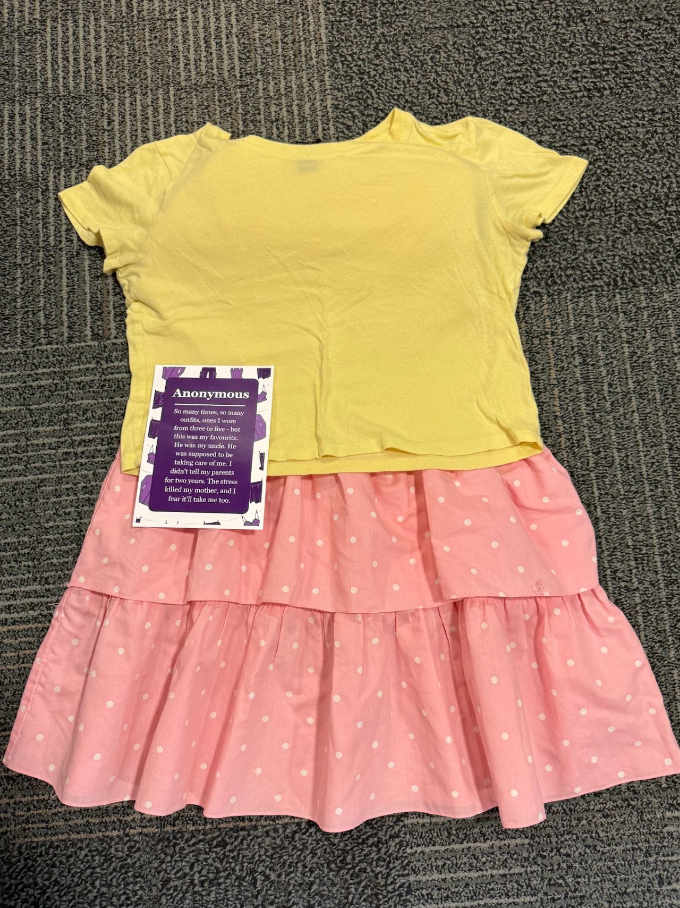
So many times, so many outfits, ones I wore from three to five - but this was my favourite. He was my uncle. He was supposed to be taking care of me. I didn't tell my parents for two years. The stress killed my mother, and I fear it'll take me too.
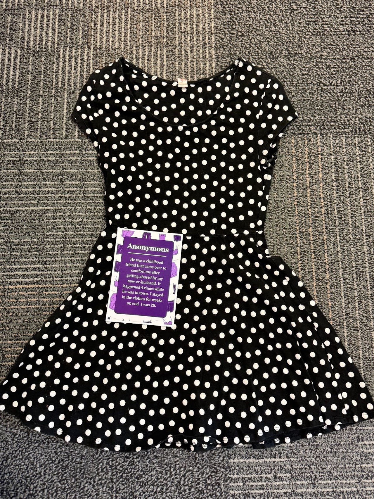
He was a childhood friend that came over to comfort me after getting abused by my now ex-husband. It happened 4 times while he was in town. I stayed in the clothes for weeks on end. I was 28.
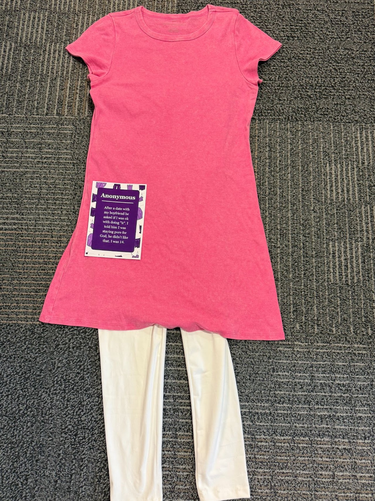
After a date with my boyfriend he asked if I was ok with doing "it". I told him I was staying pure for God, he didn't like that. I was 14.
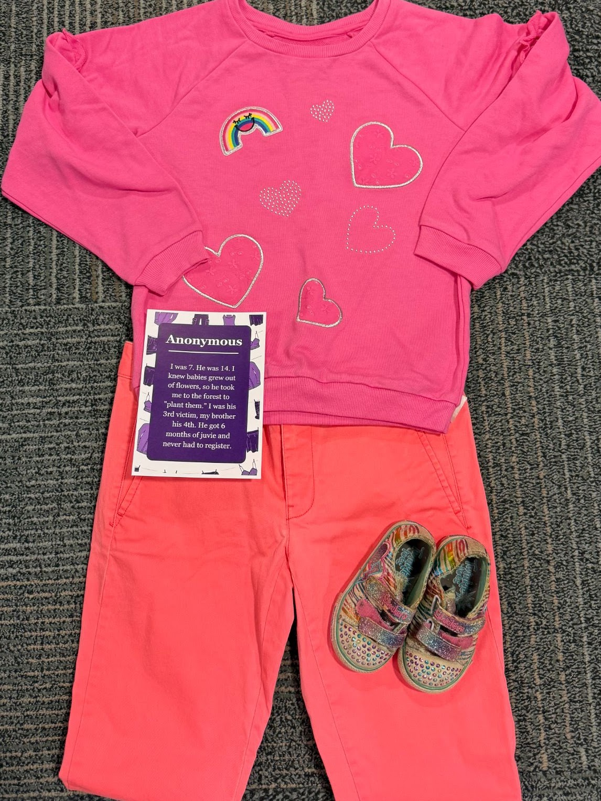
I was 7. He was 14. I knew babies grew out of flowers, so he took me to the forest to "plant them." I was his 3rd victim, my brother his 4th. He got 6 months of juvie and never had to register.
He was ...
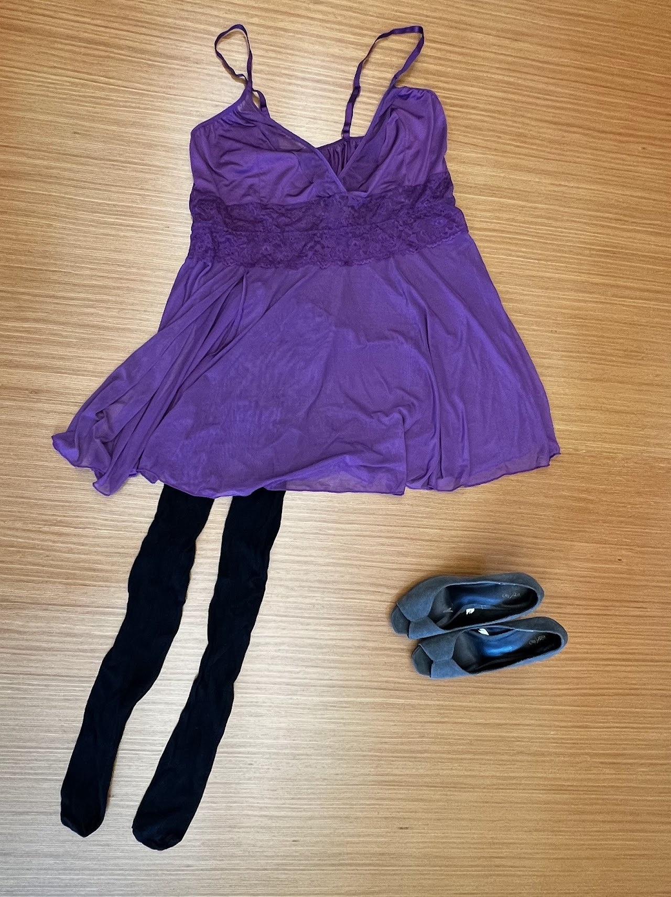
I was wearing fishnets and lingerie. The stigma around SW says that I was seeking sexual attention; even though that's partially true, that stigma led a customer to believe that my 'no' was invalid. My love for performing was not an unconditional 'yes'.
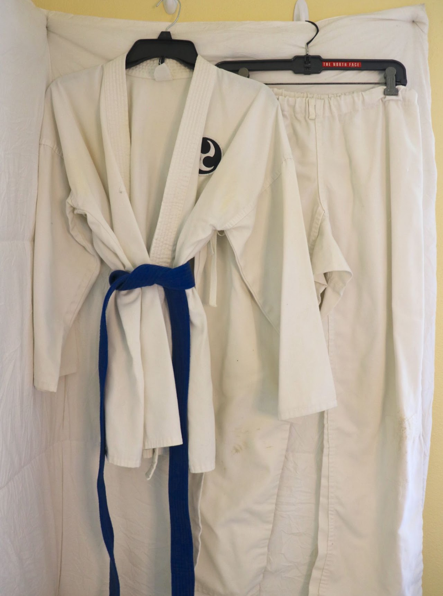
I was 15 and he was my taekwondo instructor. It all started in my taekwondo class. He would pull me aside from the group to give me solo lessons because I was behind. I was never behind. When he would pull me aside, he would get close and rub his body against mine. Eventually, he began to feel me in places with his hands during the class full of families and other students. He later told my dad I needed lots of practice, so he began giving me lessons at home too. I feared this man and still do. This man continues to be a very known individual and friend to many in my community.
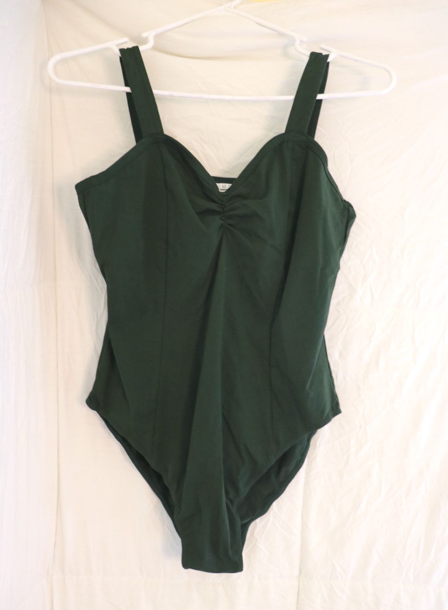
After lots of begging, my parents had let me camp out in the backyard overnight with my dad’s girlfriend’s son. I had known him since I was 5, and he was basically my brother. We slept in sleeping bags side by side and listened to the bugs buzz in the trees. We talked about what it would be like to run away from home, get married, to go to college. I was 7. He was 14. We slept through the night, and the next morning he said we should go play in the sprinkler. We raced into the house, and I put on my blue one-piece swimming suit. I remember I was going through a very intense pink-hating phase because I didn’t want to be seen as a 'girly-girl.' We played in the sprinkler for a while, then ran around the backyard pretending to duel with sticks. Then, he suggested that we should play house and motioned for me to come back into the tent. He told me that if I was going to be his wife then he got to touch me. I said no, and he pushed me down and pulled my swimsuit to the side. I remember squirming and crying, not able to get away. He told me that if I told my dad it would make my dad and his girlfriend fight, and it would be all my fault. I remember feeling so scared, ashamed, and determined not to cause them to fight. I don’t really remember anything for the rest of the day. That summer, I refused to wear a swimsuit, even on the hottest days.
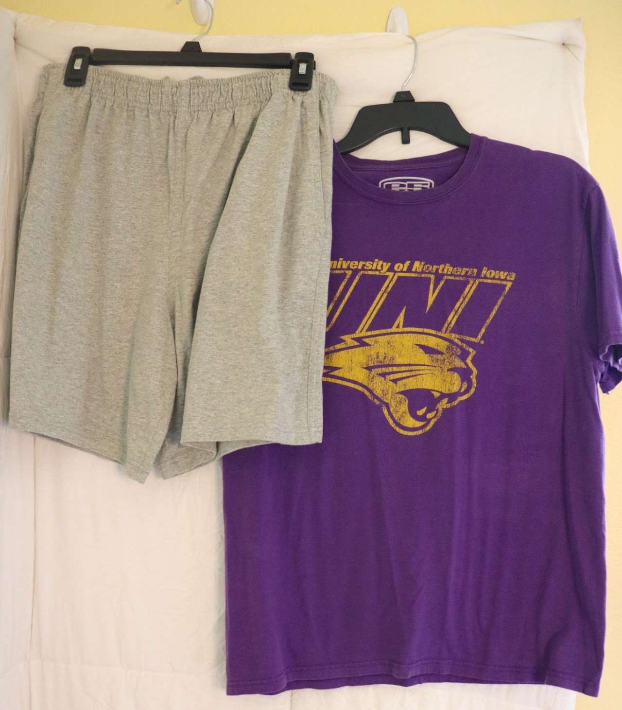
I attended the UNI vs. Iowa football game in Iowa City with friends. I was staying with a friend that night. She had other friends that I had not met before that day. I had changed (privately) into my pajamas, and I went to sleep alone on my own mattress; one of the men that I met that day had crawled into bed and sexually assaulted me while the others were still sleeping in the same room.
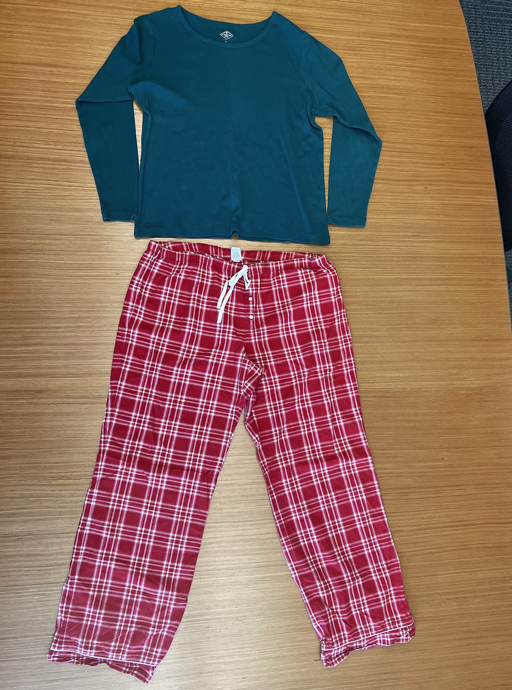
I was sexually assaulted on December 25, 2023 by a family member. I was having family Christmas on my dad’s side and decided to take a nap and woke up to someone on top of me. I was wearing matching Christmas pajamas with my sisters.
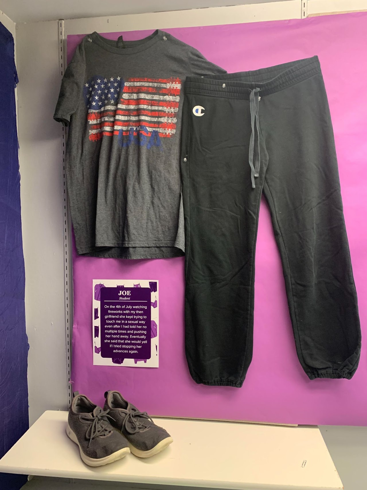
On the 4th of July watching fireworks with my then girlfriend she kept trying to touch me in a sexual way even after I had told her no multiple times and pushing her hand away. Eventually she said that she would yell if I tried stopping her advances again.
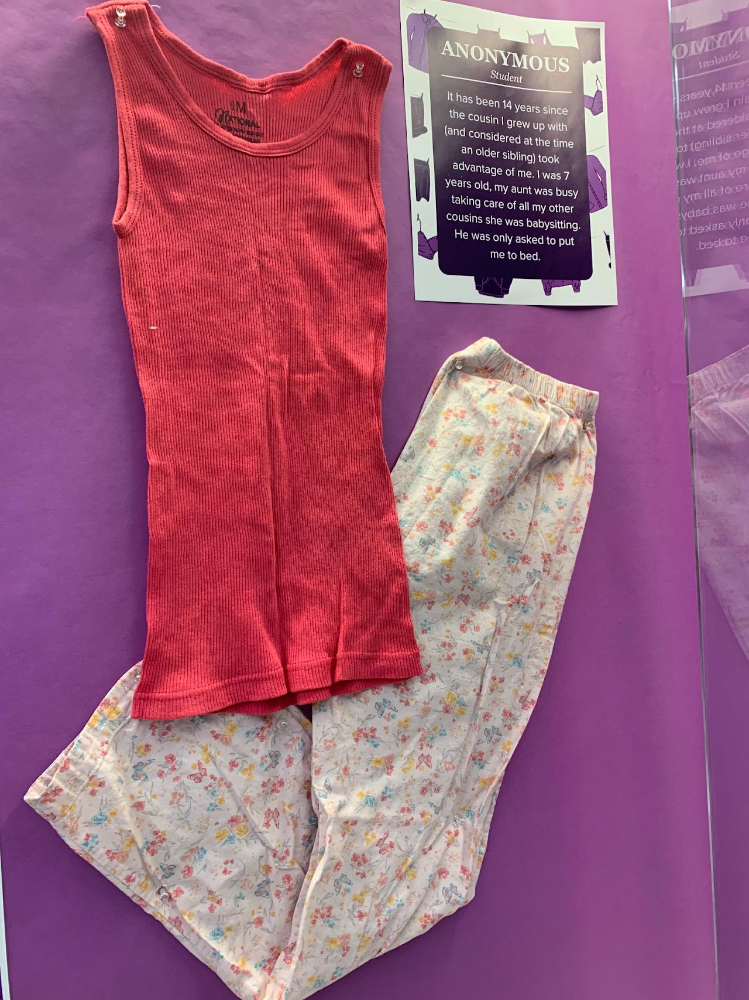
It has been 14 years since the cousin I grew up with (and considered at the time an older sibling) took advantage of me. I was 7 years old, my aunt was busy taking care of all my other cousins she was babysitting. He was only asked to put me to bed.
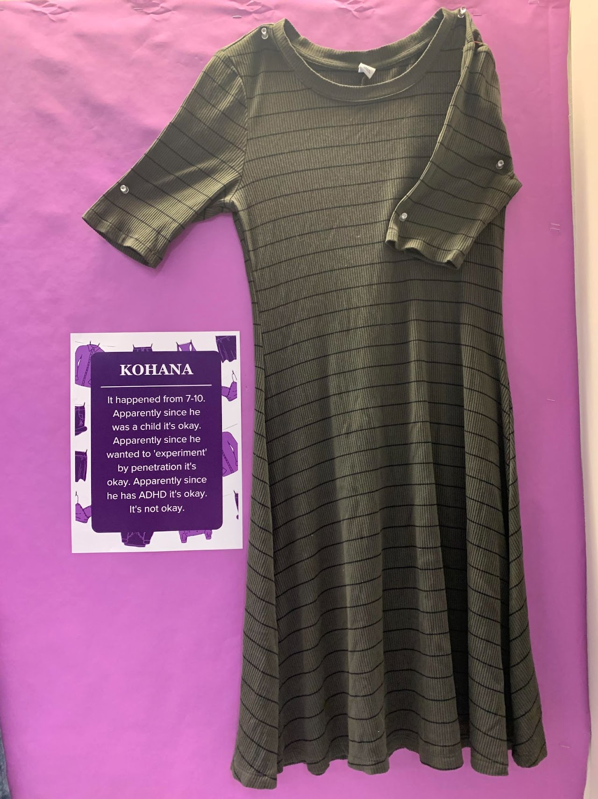
It happened from 7-10. Apparently since he was a child it's okay. Apparently since he wanted to 'experiment' by penetration it's okay. Apparently since he has ADHD it's okay. It's not okay.
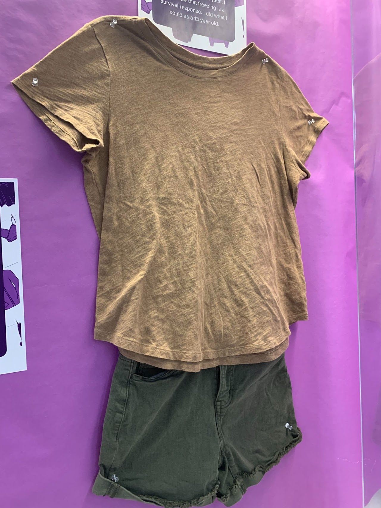
I was 13. I was volunteering and ended up alone in the room with my cousin. He started touching me and wouldn't stop unless someone came in. I froze. This happened 3 other times, and I felt like it was my fault I didn't defend myself. I know now that freezing is a survival response. I did what I could as a 13 year old.
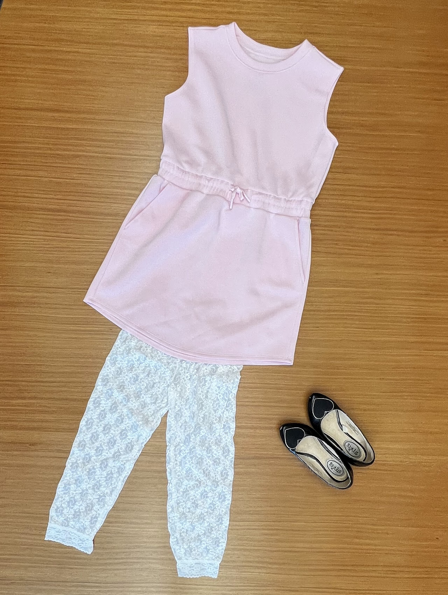
From the ages of 2-10, my great uncle and I would "play our game." He would take me somewhere private and set me on his lap. He would then bounce me to the tune of Pop goes the weasel.
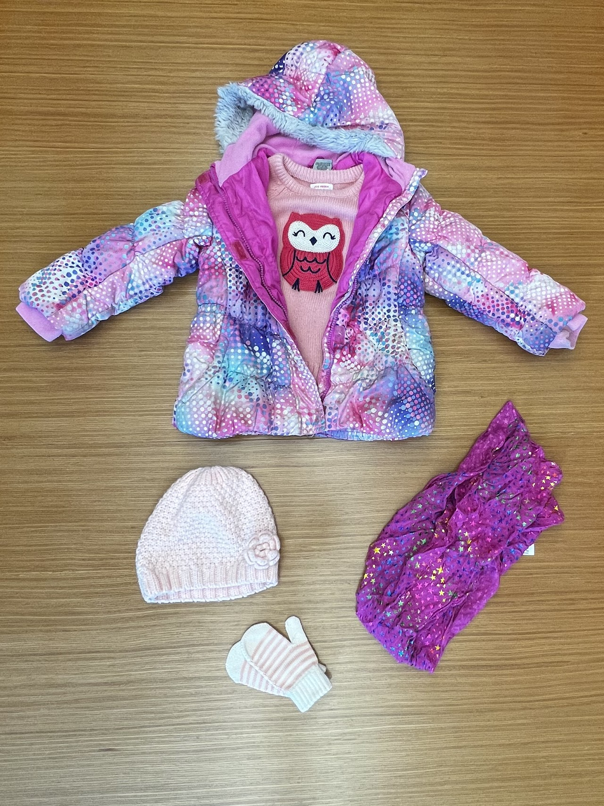
Face barely visible. Looked like a pink balloon. He didn't do it, but he sat next to, grabbed tights... followed for months, waiting in the bus, at school, outside the craft store...